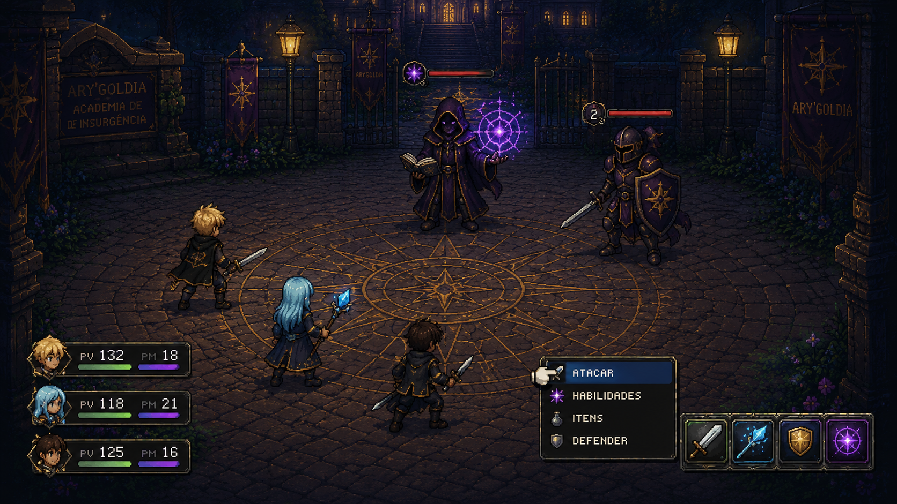
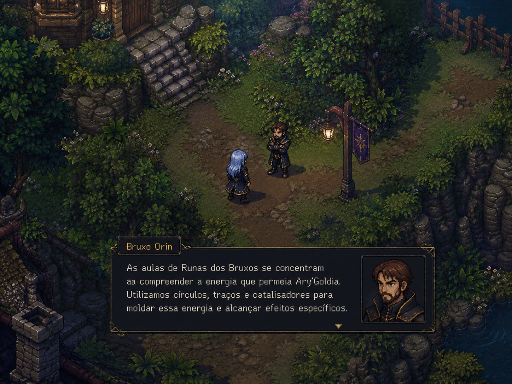

O Mundo Vivo de Ary'Goldia

Batalhas em turno com elementos mágicos, sistema de combate dinâmico. Explore o combate e descubra estratégias únicas e demonstre ser o maior insurgente que já pisou na academia.

Converse com personagens fascinantes e desvende os segredos da academia. A busca pelo conhecimento e magia pode se demonstrar algo misterioso, mas fascinante.
O Legado de Ary'Goldia
No ano de 1954, em meio a segredos arcanos, conflitos ideológicos e magia proibida, a Academia de Insurgência Ary'Goldia forma jovens prodígios destinados a desafiar antigas ordens e remodelar o destino do mundo.